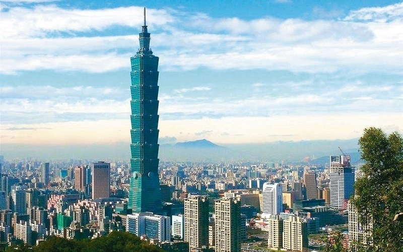
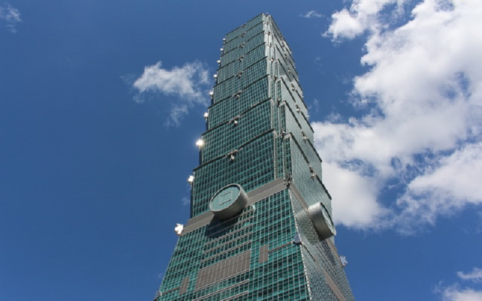
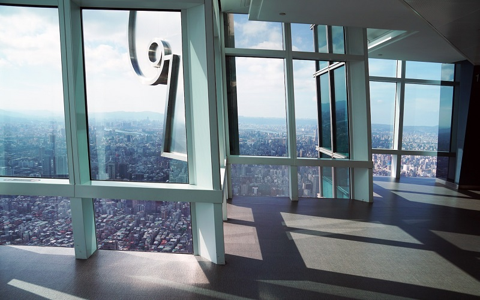
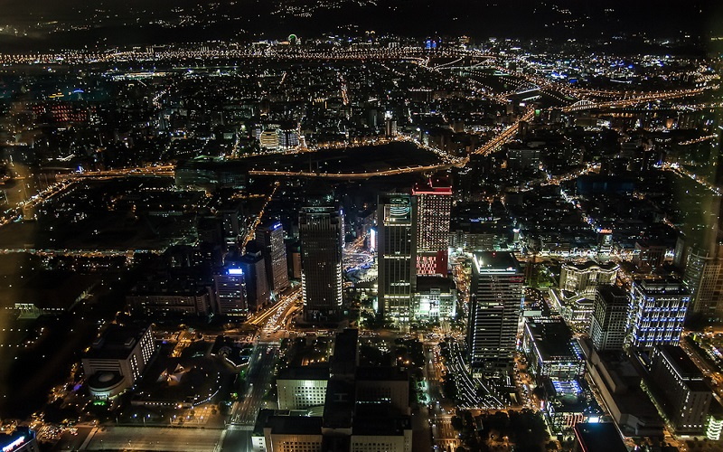
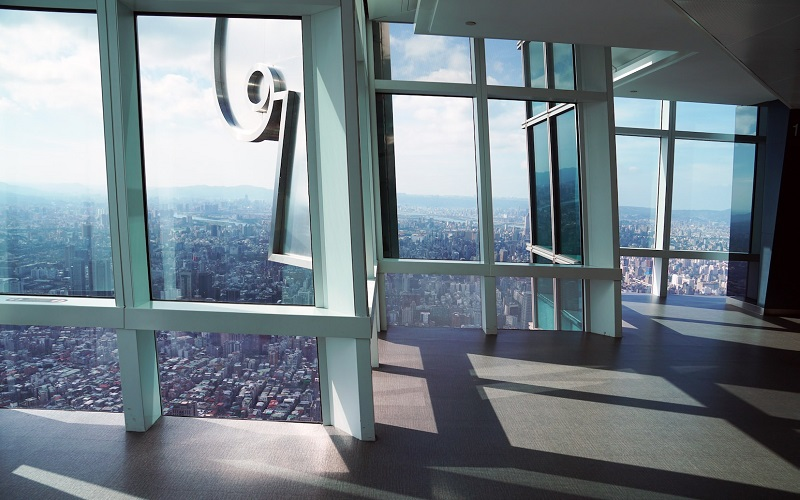
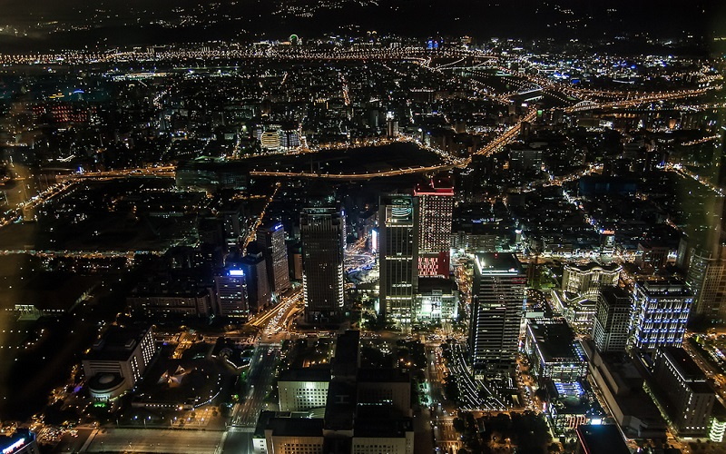

Taipei 101
Taipei City
Taipei 101
 



The Taipei 101 is a landmark supertall skyscraper in Xinyi District. It is 509.2m in height and was the world's tallest
building until the Burj Khalifa in Dubai was constructed in 2010. The appearance of 101 is designed in the shape of Chinese
character "鼎(Ding)", which symbolize the money boxes in Chinese culture. To strengthen the resistace of earthquakes and
typhoons, a 660-tonne steel pendulum with 5.5m in diameter is suspended from the 92nd to the 87th floor and serves as a
tuned mass damper. The pendulum sways to offset movements in the building caused by strong gusts. In the 89th floor is
the observatory, which can overlook the whole Taipei City. During the New Year's Eve, the fireworks displayed in Taipei 101
is the most anticipated part of the New Year's Eve show in Taipei.
- Official Website: https://www.taipei-101.com.tw/en/index.aspx
- Best seasons: all year around
- Transportation:
MRT Taipei 101 station.